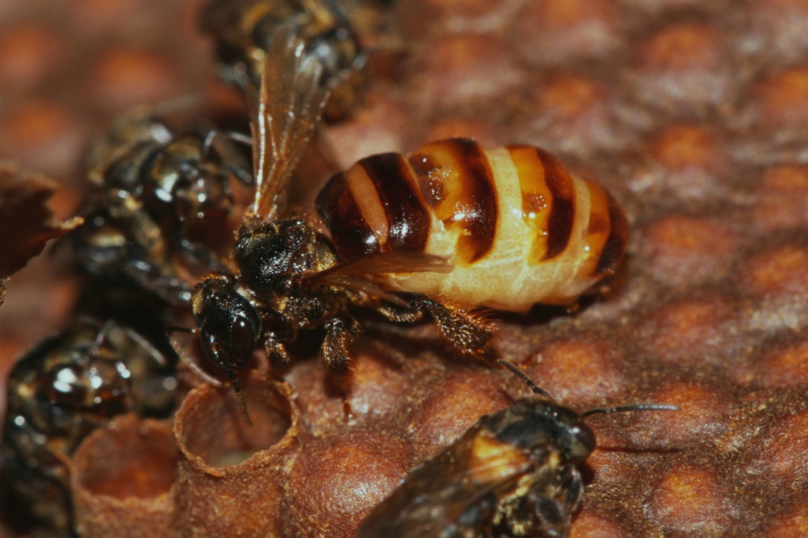

A abelha Jataí (Tetragonisca angustula) é uma espécie de abelha nativa do Brasil, conhecida por ser uma abelha sem ferrão (meliponíneo). Ela é pequena, medindo cerca de 4 a 5 mm de comprimento, e possui uma coloração que varia de marrom-claro a preto brilhante, muitas vezes com listras amarelas ou alaranjadas no abdômen.Essas abelhas são encontradas em áreas de floresta e também em ambientes urbanos, onde são valorizadas pela produção de mel e pela polinização de plantas. São conhecidas por serem dóceis e por formarem colônias pequenas, com algumas centenas até alguns milhares de indivíduos.
Essas abelhas vivem em colônias permanentes, que podem variar de algumas centenas a alguns milhares de indivíduos, dependendo das condições do ambiente. Cada colônia é organizada em castas que incluem a rainha, os zangões (machos) e as operárias. A rainha é responsável pela reprodução, enquanto as operárias realizam todas as outras funções dentro da colmeia, como coleta de néctar, construção de favos, cuidado com as larvas e defesa da colônia.
<